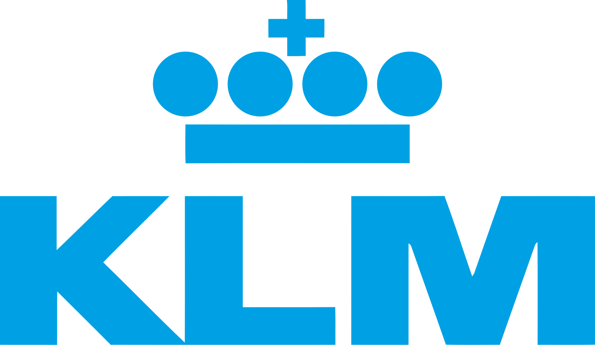
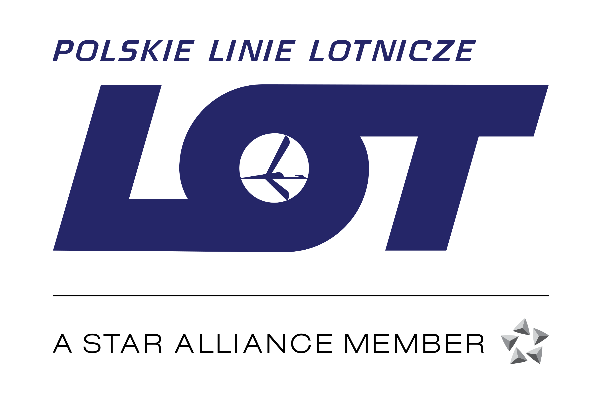

Lista pięciu znanych lini lotniczych.

(Królewskie Towarzystwo Lotnicze) – holenderska linia lotnicza, wchodzące w skład holdingu Air France-KLM. Należy do sojuszu lotniczego SkyTeam. Głównym portem jest Amsterdam-Schiphol. Jest najstarszą linią lotniczą na świecie, założoną i latającą nieprzerwanie od 1919.
W 2025 KLM realizował bezpośrednie loty z Amsterdamu do 167 portów lotniczych w 65 krajach na całym świecie, w tym do Polski, do Warszawy, Krakowa, Wrocławia, Poznania i Gdańska.

Narodowa linia lotnicza Australii założona w 1920. Siedziba linii mieści się w Mascot, dzielnicy Sydney, a głównym węzłem jest port lotniczy Sydney. Są to największe i najstarsze linie lotnicze Australii oraz drugie najstarsze na świecie (holenderskie KLM założono rok wcześniej).
W 2010 Qantas posiadał 65% udziału w przewozach krajowych, jednak na rynku przewozów międzynarodowych przegrywa z azjatyckimi przewoźnikami, z powodu relatywnie wysokich kosztów działalności i intensywnego współzawodnictwa konkurentów.
Japońskie narodowe linie lotnicze z siedzibą w Tokio założone 1 sierpnia 1951. Głównymi węzłami linii są lotniska Nagoja, Kansai, Narita i Tokio-Haneda.
Linie oferują loty pasażerskie na 259 trasach międzynarodowych i 144 krajowych (razem z codeshare), a także loty cargo na 21 trasach. Agencja ratingowa Skytrax przyznała przewożnikowi pięć gwiazdek.

Polskie linie lotnicze, utworzone 29 grudnia 1928 pod nazwą Linie Lotnicze LOT Sp. z o.o. z połączenia – działających w kraju – prywatnych linii lotniczych Aerolot i Aero, jako wynik ich nacjonalizacji. Faktyczną działalność rozpoczęły 1 stycznia 1929 i są jedną z najstarszych czynnych linii lotniczych świata.
(Emirates) – linia lotnicza mająca siedzibę w Dubaju, w Zjednoczonych Emiratach Arabskich. Jej głównym węzłem jest lotnisko w Dubaju.
W okresie rozliczeniowym 2012–2013 linia przewiozła 39 391 000 pasażerów oraz 2 086 000 ton ładunków. Średni współczynnik zapełnienia samolotów w tym okresie wyniósł 79,7%. Linia zatrudnia ponad 60 000 osób oraz jest własnością rządu Zjednoczonych Emiratów Arabskich.